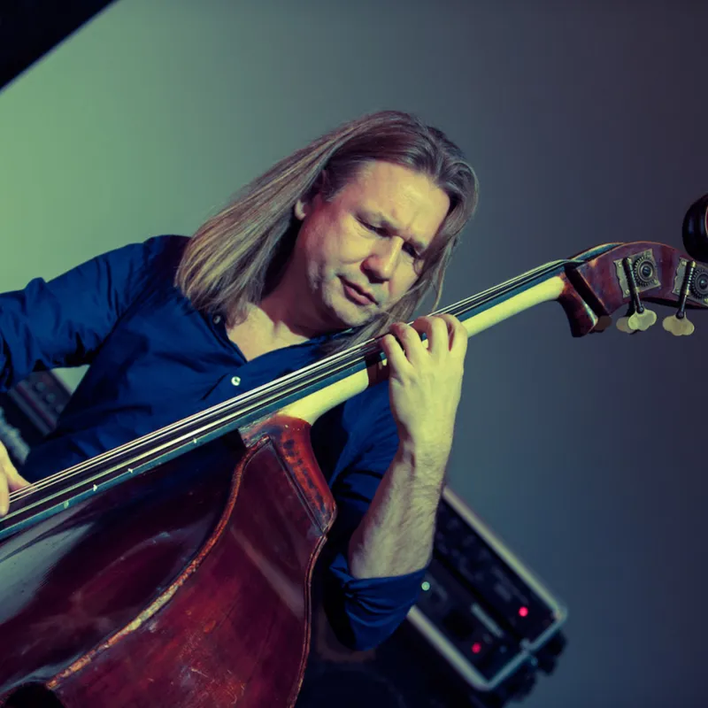

Per Mathisen
Per Mathisen, født 7. oktober 1969 i Sandefjord er en norsk jazzmusiker, bassist og komponist, kjent fra samarbeid med mange ansette jazzmusikere og noen av de mest kjente musikerne på kloden.
Noen navn verdt å nevne er: Terri Lyne Carrington, Geri Allen, Gary Thomas, Bill Bruford, Alex Acuña, Gary Husband, Ralph Peterson, Nguyen Le, Robben Ford, Bill Evans, Keith Carlock, Jon Christensen og Terje Rypdal.
Mathisen har vært frilans bassist siden 1994, og per i dag basert både i Oslo og i Wien.
Han har opptrådt i 45 land over hele verden og blir ofte omtalt som Norges svar på Jaco Pastorius på elbass og Niels Henning Ørsted Pedersen på akustisk kontrabass.
Han er utdannet ved jazz-studiet ved Trondheim musikkonservatorium 1991–93, etterfulgt av en periode ved Berklee School of Music i USA, men returnerte til Norge i 1994.
I 2013 spilte han med velkjente Joseph Williams, Bill Champlin og Peter Friestedts, All Star Band. Mathisen har også delt scene med et av de mest anerkjente skandinaviske jazznavnene i verden, den svenske gitaristen, Ulf Wakenius.
Mathisen har gitt ut 16 meget anerkjente CD-er som leder, co-leder og produsent.